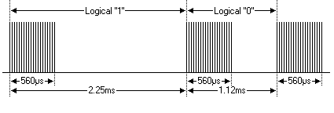
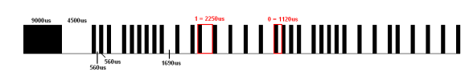

MANDO A DISTANCIA CON ARDUINO
PROTOCOLO
NEC
Texto copiado de
https://geekytheory.com/protocolo-nec-receptor-ir-con-arduino/
El protocolo NEC consta de 32 bits. 8 de ellos son de
dirección
y, otros 8 de longitud de comandos. Estos 16 bits, se repiten otra vez
para obtener una mayor fiabilidad en la comunicación. Como sabemos, un
bit puede ser un 0 o un 1. El protocolo NEC, utiliza 2.25 milisegundos
para mandar un 1 y, 1.12 milisegundos para mandar un 0. Para el 0, se
manda un pulso a 38 kHz durante 560 microsegundos y se deja un huevo
durante los otros 560 microsegundos restantes. Sin embargo, para enviar
un 1 lógico, se manda un pulso a 38 KHz durante 560 microsegundos y se
deja un hueco de 2.25 ms- 560 µs=1.69ms. Como vemos, se manda lo mismo,
a 38 KHz durante 560 µs, pero como el 1 lógico dura más que un 0
lógico, el hueco que se deja antes de mandar otro bit, tiene diferente
duración.

En este protocolo, el LSB se transmite el primero. Un mensaje se inicia
mediante un pulso de 9 ms, con el fin de establecer una cierta ganancia
con respecto a la comunicación anterior. Este pulso, va seguido de un
espacio de 4.5 ms y, tras estos 13.5 ms, se transmite el mensaje.

Receptores
de IR
Algunos fabricantes de receptores de infrarojos de mando a
distancia son:
TFMS
Telefunken
SFH511X Siemens
PNA
Panasonic
TSOP17XX Vishay
El recomendado en el la web es el
TSOP1738 donde el 38 indica la frecuencia
de 38KHz de
haz de luz.